HaMonitorSentry 高层智能监测系统
第17届中国大学生计算机设计大赛 人工智能应用-人工智能实践赛 作品
查看我们的项目代码：
GitHub
HaMonitorSentry
是专为高层建筑和人群密集区设计的高级智能安防系统。该系统结合高分辨率、高帧率摄像技术和双角度监测策略，适用于智慧安防、智慧社区和智能建筑等行业，致力于与物业、企业、政府合作，以保障公民的生命和财产安全。
- 本作品立足于 智慧安防、智慧社区、智能建筑 等国家新兴技术赋能行业，应用于
高空抛物溯源 和 高层危险行为监测 等各类场景，致力于保障公民的生命财产安全。
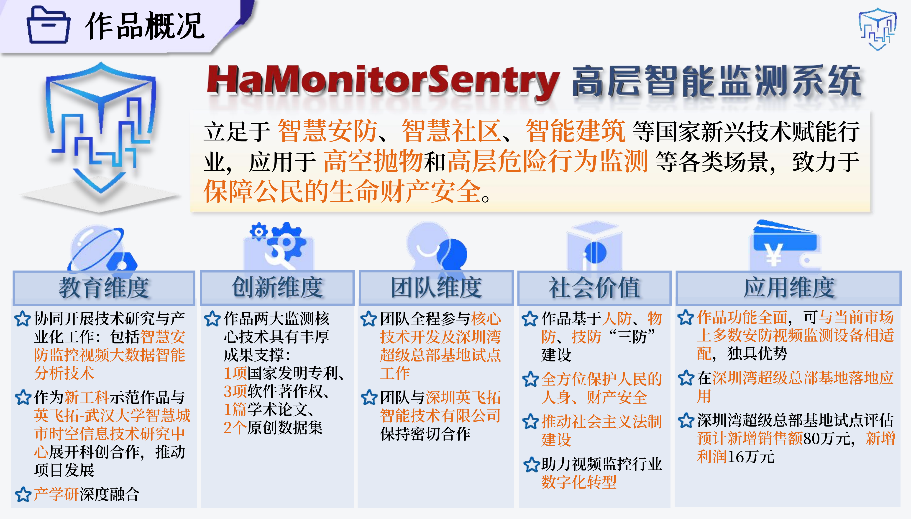
- 有数据显示，我国近三年来高层事故数量连年增长，这些触目惊心的数字警示着我们正面临着严峻的社会安防威胁；
- 但同时，令人振奋的是，国家已发布多项政策，来支持我国智能安防的建设与发展；
- 公共安全领域投入也逐步扩大，总体呈现逐步增长之势，智能安防行业市场规模也持续增长；
- 我们总结了目前仍然难以解决的痛点：
- 高空事故发生前无法及时警示有关主体
- 存在着“取证难、判定难、定罪难”的困境
- 民众仍对高空抛物事故的发生心存侥幸
- 当前技术在处理复杂监测场景时存在挑战：准确性弱、鲁棒性差、实时性弱、未针对优化
- 当今市面上现有的高层监测设备大多功能狭窄、数据不全、场景局限、监测欠佳
- 故可见，现有措施和设备均无法良好地满足智能安防的要求以全方位保护人民生命财产安全！
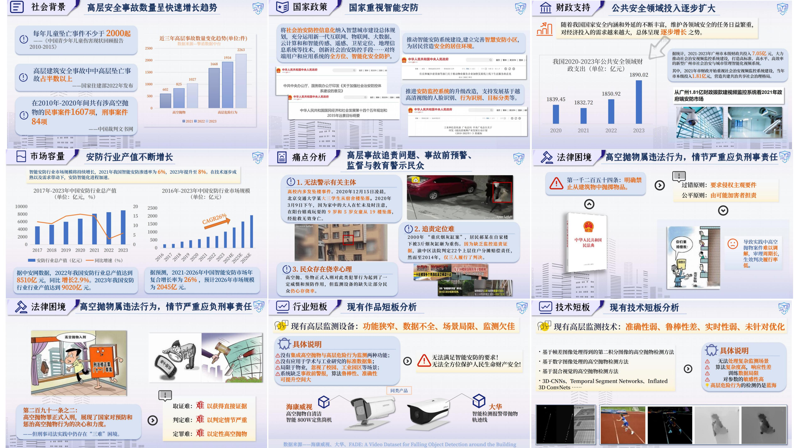
- 因此，我们设计了对应的解决方案：一套提供足够威慑力、有效监督民众违法行为、保障民众生命财产安全的高层智能监测系统；
- 与现有产品对比，我们将多算法相互结合，功能全面，在高层智能监测领域独具优势。
核心功能
高空抛/坠物监测
- 系统的第一个核心是高空抛/坠“物”监测；
- 采用 Panoptic FPN ResNet-101 语义分割技术提取建筑物背景并使用类间距离蒸馏，并对运动对象进行去噪处理，同时引入 MA
模块，加速信息流动效率；
- 最终使得高空抛物检出率稳定在 65% 以上，误报率小于
15%，理想情况下检出率可达 95%，误报率小于 5%。
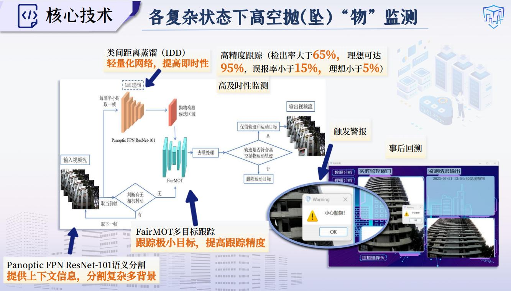
高层建筑边缘危险行为监测
- 第二个核心是高层建筑物边缘侧“人”的危险行为监测；
- 在同一个网络中融合时序信息和空间信息，捕捉视频中的动态行为和时间依赖特征，通过多头注意力和前馈网络处理；
- 最终使得人体检测率大于 70%，行为及危险系数确认误识率小于 15%，理想情况下检测率可达
95%，误报率小于 5%。
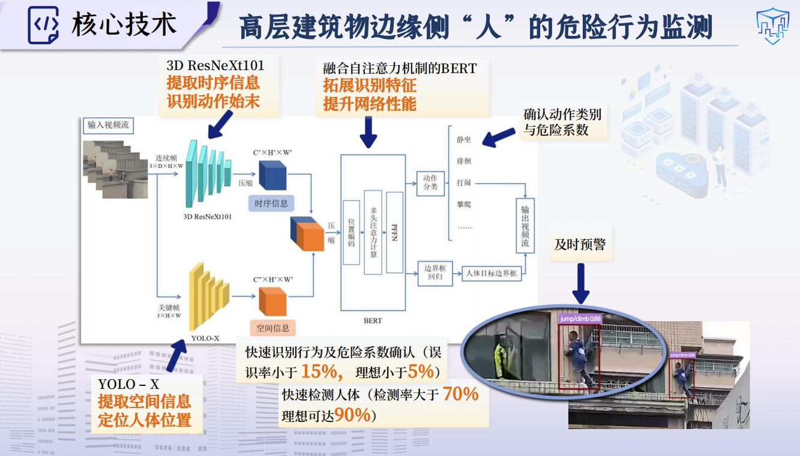
数据集构建与开源
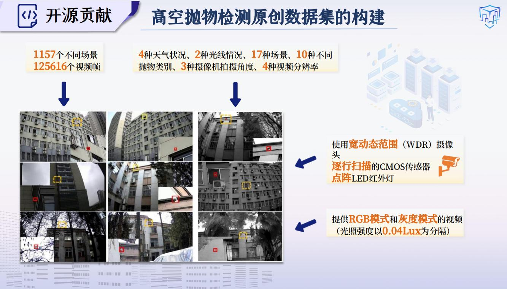
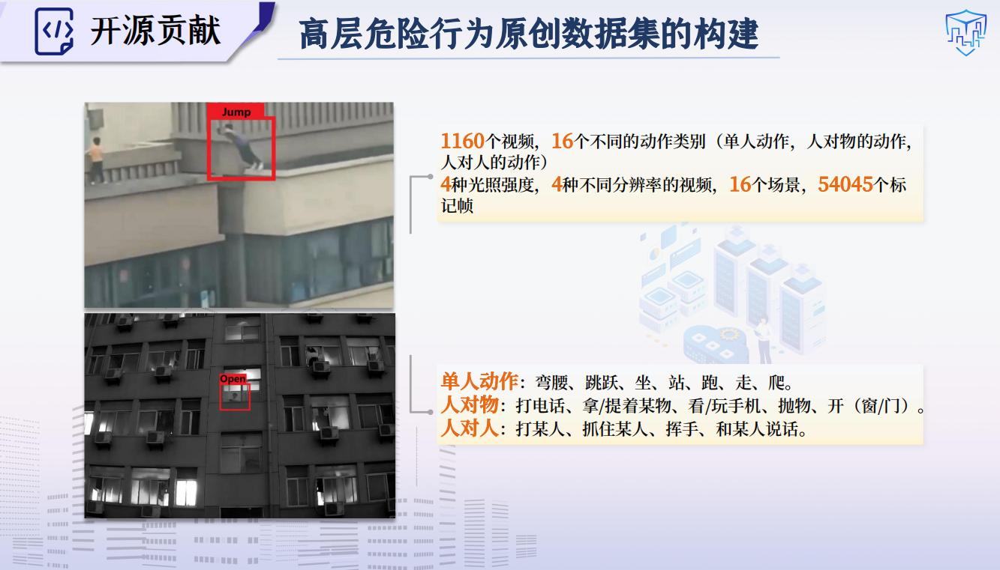
系统实现
- 我们的系统坚持从双重监测角度出发，同时实现一体化通信和数据治理的交叉融合。
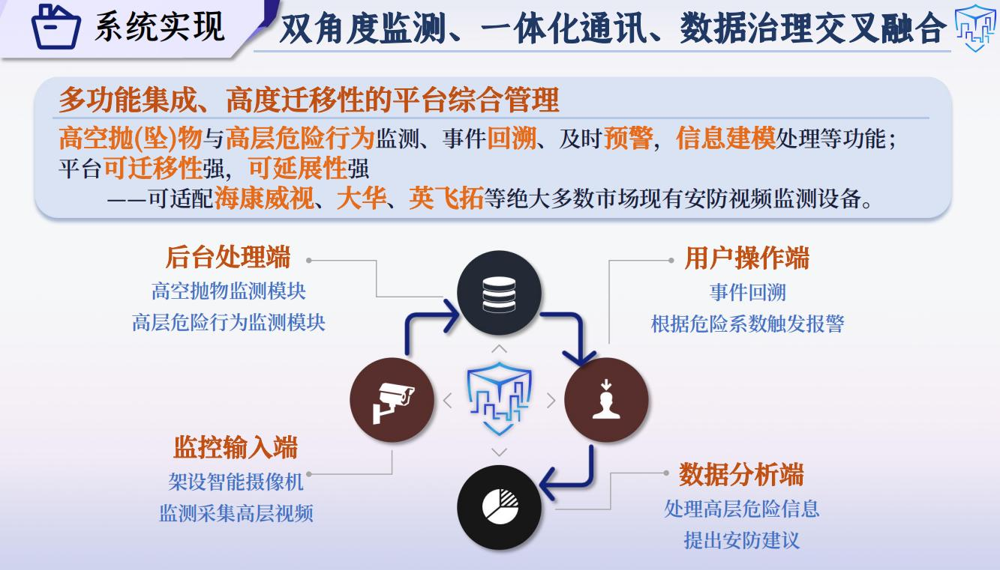
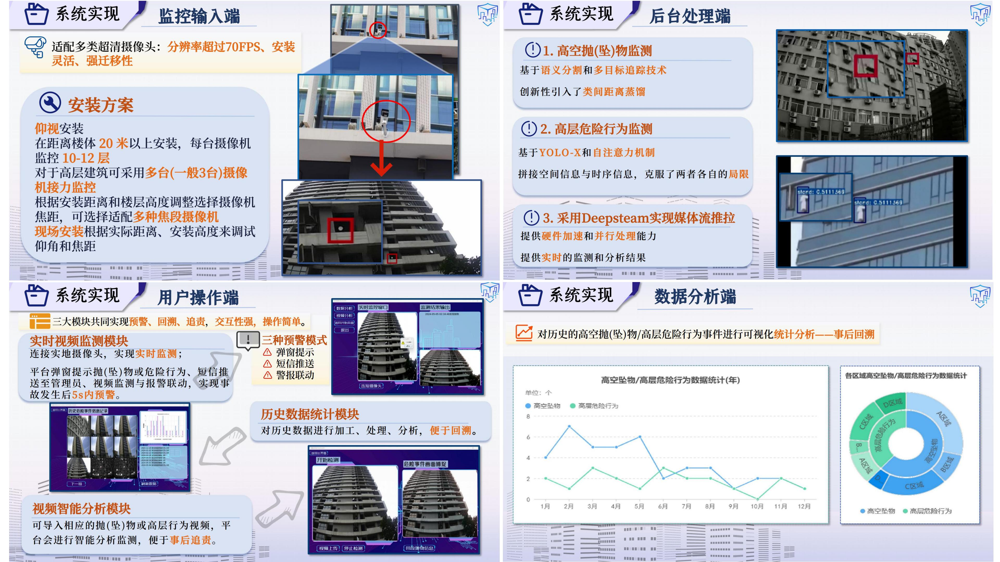
产学研一体
- 目前基于本作品已落实1项专利、3项软著、1篇学术论文以及2个原创数据集；
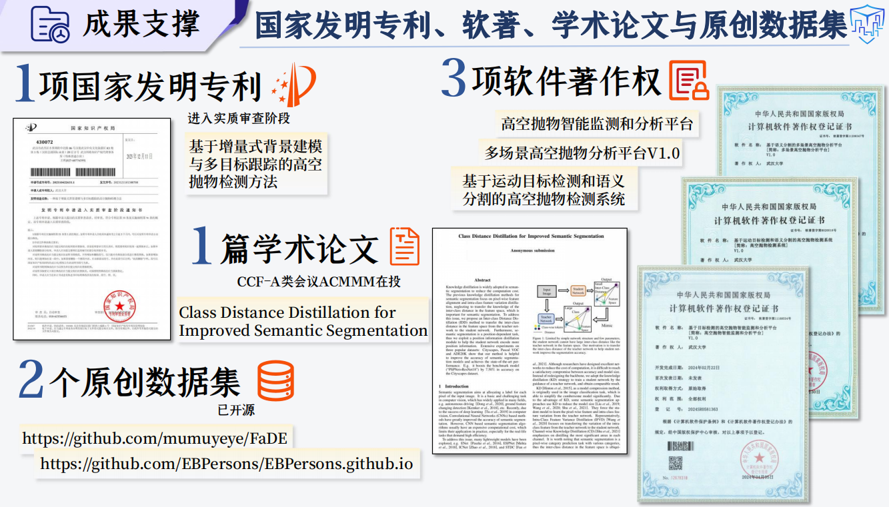
- 本作品由深圳英飞拓智能技术有限公司提供硬件支持，促进应用研发过程；
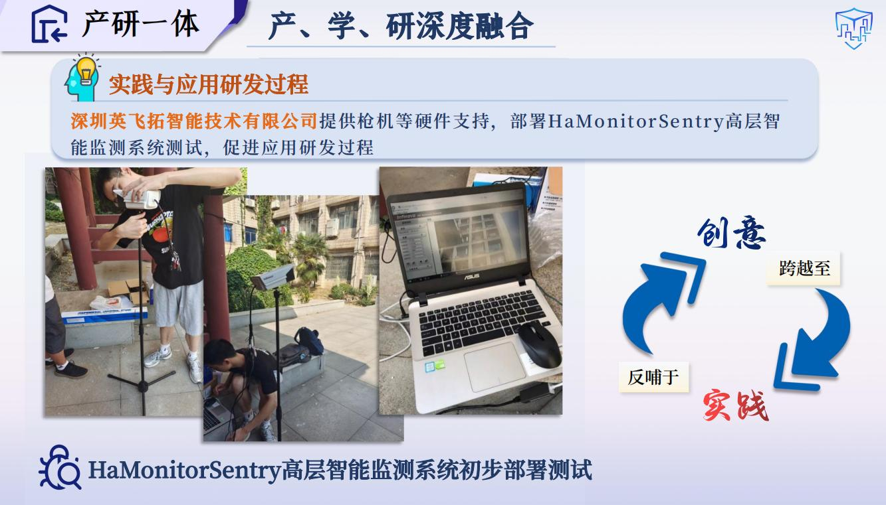
- 并将本系统应用于深圳湾超级总部基地及其他多个园区，实现落地试点，带来广泛的社会效益和显著的科技示范效益。
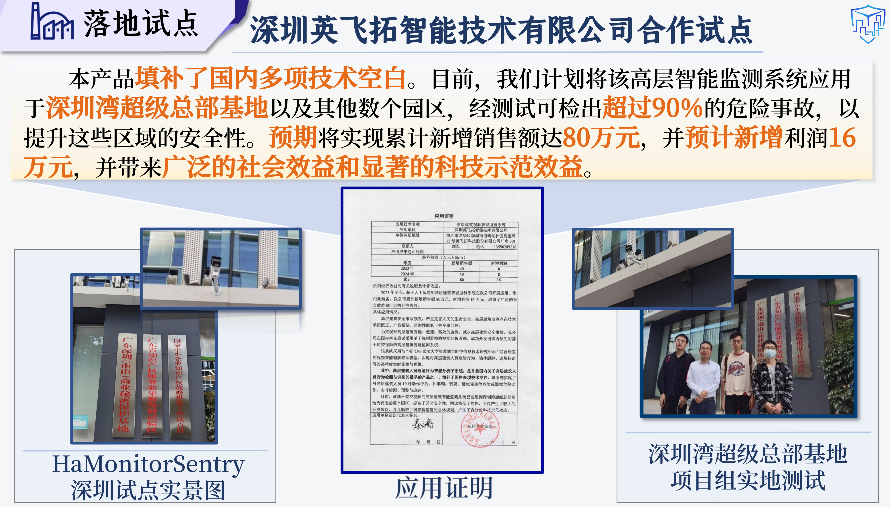
系统介绍视频
作者的话